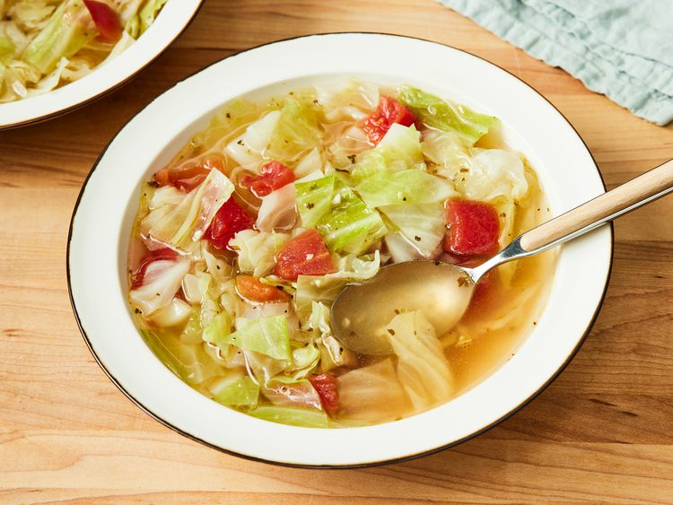

Cabbage Soup
Home

This is a recipe for cabbage soup from AllRecipes. the link to the original recipe is here
Ingredients
½ cup unsalted butter
2 tablespoons olive oil
4 cups sliced onions4 cups sliced onions
5 cups beef broth
2 tablespoons dry sherry
1 teaspoon dried thyme
1 pinch salt and pepper to taste
Instructions
- In a large stockpot, heat olive oil over medium heat. Stir in onion and garlic; cook until onion is transparent, about 5 minutes.
- Stir in water, bouillon, salt, and pepper. Bring to a boil, then stir in cabbage. Simmer until cabbage wilts, about 10 minutes.
- Stir in tomatoes. Return to a boil, then simmer 15 to 30 minutes, stirring often.
- Serve hot and enjoy!